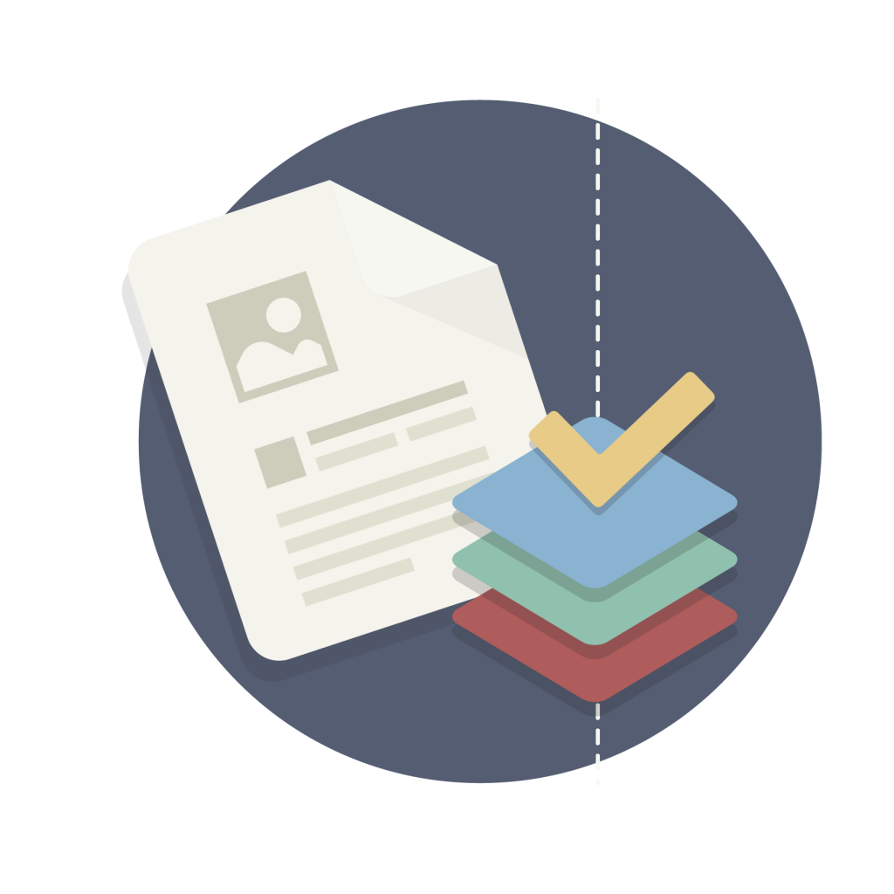

Programa Nacional de Apoyo Directo a los Más Pobre "JUNTOS" - UT Puno
DIRECTIVAS - UNIDAD DE TECNOLOGIAS DE INFORMACION
Directiva de acceso y uso de los recursos y servicios informaticos en red
Procedimiento para la atención de servicios informáticos
Procedimiento para la atención de servicios informáticos
Procedimiento para el Mantenimiento del Hardware y Software
Procedimiento de Gestión de Vulnerabilidades e Incidentes de Seguridad de la Información

Manual de Buenas Prácticas sobre Servicios Informáticos
Plan de Gobierno Digital del Programa JUNTOS
Plan de Transición al Protocolo IPv6 del Programa “JUNTOS”
Plan de Contingencia Informático
Instructivo para el Trabajo remoto con herramientas de Tecnologías de la Información